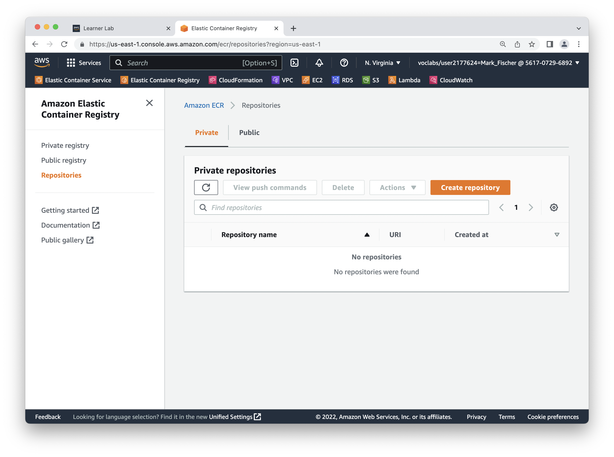

CSC 346 - Homework 8 #
In this homework assignment you will deploy The PictureGram App from Homework 6 in AWS with the Elastic Container Service and an Application Load Blancer instead of directly on EC2. We'll also integrate the image upload system from homework 7 in to the app.
You will need to create an Elastic Container Registry (ECR) repository to hold your docker image, and the build and push the image up. Then you will need to import an SSL TLS certificate to use on our Application Load Balancer. Then you'll need to collect a few bits of information to use in deploying the CloudFormation template. Lastly I will have an updated automated test app site for you to use to test your infrastructure deployments.
What to turn in #
Turn in a .zip file of a folder containing the following files:
yournetid-hw08/
notes.txt
Dockerfile
html/
favicon.ico
index.html
js/
app.js
picturegramSDK.js
Points #
This assignment will be worth 60 points. Turning the assignment in early will earn you an additional 10 points extra credit.
- Early submission: April 25th 11pm MST (UTC-7) (+10 points)
- Original Due Date: April 27th 11pm MST (UTC-7) (+5 points)
- Final Due Date: April 30th 11pm MST (UTC-7)
Starting Point #
The starter zip for this assignment contains the Web Application and Dockerfile needed to build the application image, as well as the CloudFormation template to be used to dpeloy the infrastrucutre resources.
https://www2.cs.arizona.edu/classes/cs346/spring24/homework/NETID-hw08.zip
Part 0: Update S3 CloudFormation Template and Function URL #
I had a mistake in the CloudFormation Template from Homework 7. In order to interact with the Upload S3 bucket with JavaScript in a web browser, CORS must be configured correctly on both buckets. I left off the CORS configuration from the Upload bucket in the homework 7 template.
There is an updated template in this assignment's starter ZIP, s3_template_cors.yaml.
CloudFormation Console #
In your AWS console, navigate to the CloudFormation service. Locate the stack you created to deploy the two S3 buckets. Click on the resources tab to see that you have the correct stack.
Update S3 Stack #
With the stack selected, click on the "Update" button near the top. On the update screen, select "Replace existing template". Then "Upload a template file". Click the "Chose file" button, and select the s3_template_cors.yaml file from the starter ZIP. Then click "Next"
We don't need to change the stack name, parameters, or any other stack settings, so you can click "Next" through the Parameters screen and Configure stack options screen. When you get to the Review screen, scroll down and click "Submit".
You can watch the progress on the "Events" tab. The update should only take 30 seconds or so. Once the stack reaches "UPDATE_COMPELTE" you're done.
Lambda Function URL CORS Configuration #
In homework 7, we only interacted with your lambda functions directly through Postman or curl. When trying to use the Function URL in JavaScript, modern browser enforce a security model called "Cross-Origin Resource Sharing" commonly abreviated as CORS.
https://developer.mozilla.org/en-US/docs/Web/HTTP/CORS
Navigate to the AWS Lambda console, and select your Generate Upload URL function. In the "Configuration" tab, select "Function URL" from the sidebar and click "Edit".
Expand the "Additional settings" section, and check "Configure cross-origin resource sharing (CORS)". You can leave everything in the CORS section as defaults except for the "Allow methods" section. You need to check GET for that. Then click the "Save" button and that should be it for updates.
Part 1: Upload Attached Images #
Here, you will tie in your image upload API system from homework 7. You will need to set your Function URL from your generate upload URL Lambda function as generateApiFunctionUrl at the top of app.js.
See the PART 1 comments in app.js for more details on what code to complete. There are sections to complete in the checkUploadImage() and handleNewPost() functions in app.js.
Part 2: Update Chat POST with Image URLs #
After an image is uploaded to your S3 bucket, and they've been resized, you need to include the new fullsize and thumbnail image URLs with the createPost API call. You will need to update the handleNewPost() function in app.js and the createPost() method in picturegramSDK.js. See the STEP 2 comments in those files for details.
As you test this part, I recommend un-commenting the debug line near the bottom of
picturegramSDK.js. This will return an empty Promise object instead of actually calling the POST chat API, potentially saving you from uploading a bunch of chats with broken image URLs as you figure things out.// return Promise.resolve({"status": "error", "message": "short circuit"})I also included a sample image you can use for testing if you don't want to hunt down your own.
If all goes well, you should be able to include an image when you post a new chat message!
Part 3: Elastic Container Registry #
We need to create an ECR repository to hold our build docker images. Since this is a pretty simple resource, it is easy to just create it manually in the AWS web console.
Log in to your AWS Academy account, start the lab, and access the AWS web console. Search for "ECR" and then click on the "Create repository" button. Leave all the settins as their default, and fill in the repository name.

After creating the repository, click on the "Show Push Commands" button. You probably want to copy these to a notes file, or make a bash/powershell script to store that command to avoid having to come back here to get the login and push commands again.
Find the
notes.txtfile from the starter ZIP and use it to record the various commands and values you'll need for this assignment:
- Docker Login Command:
- Docker Build Command:
- Docker Push Command:
- Image URI:
- TLS Cert ARN:
- LabRole ARN:
- VPC ID:
- Subnet IDs:
- LoadBalancerDNSName:
Copy the Docker commands into notes.txt.
Part 4: Build and Push Your Docker Image #
Before you can build and push your docker image, you must ensure that your AWS CLI credentials have been updated. Copy in the current values from the AWS Academy site into your ~/.aws/credentials file.
You will need to have the AWS CLI v2 tools installed to log in to the AWS ECR and push your Docker image up. See https://aws.amazon.com/cli/ for instructions.
Apple Silicon Mac Users!
You will need to add an additional option to your
docker buildcommand to make sure you build for the correct architecture.Add
--platform linux/amd64before the-t ...option in the commands you copy from the ECR repository. Somthing like:docker build --platform linux/amd64 -t csc346-app .
Once your image is uploaded, record the URI for your image in your Notes file.
Part 5: AWS Certificate Manager #
Next, we need to upload a TLS (transport layer security) certificate for you to use on your Application Load Balancer to provide encryption for the application. Because we'll be using the .arizona.edu Domain Name, the certificate itslef needs to be issued by someone with the authority to issue certificats on the behalf of the University of Arizona. UITS does that for us fortunately!
In the services search bar of the AWS web console, search of "ACM" and go to the Certificate Manager console. From there click on the "Import" button to set up our certificate.
If you see a big red "Failed to list certificate authorities" error, you clicked on the "Request" button. Go back and click on "Import".
There are three text fields you need to fill with the contents of the certificates files from the starter kit:
- Certificate body: csc346_arizona_edu_cert.cer
- Certificate private key: csc346_arizona_edu_cert.key
- Certificate chain: csc346_arizona_edu_interm.cer
Copy the contents of each of the files into the associated text fields, then click the "Next" button. We don't need to add any tags to this, so click "Next" again, and then "Import" on the "Review and import" screen.
If you don't see your certificate right away, reload the page. Then click on your certificate to see the details, and copy the ARN to your Notes file.
Part 6: Gather Remaining Parameter Values #
The last bits of information you need to deploy the CloudFormation template are to find your Lab Role ARN, VPC ID, and Subnet IDs.
Lab Role ARN #
Roles are located in the IAM service console, so find that from the services search bar, and then click on "Roles" in the left sidebar. Scroll down to find the "LabRole", then click it to view the details. Copy the ARN of the role to your Notes file.
VPC ID #
To find the VPC ID for your account, search for the VPC service in the search bar. You should just have one default VPC. Copy its ID to your Notes file.
VPC Subnet IDs #
Lastly we'll need two Subnet IDs to reference in our Application Load Balancer config. From the VPC console, click on "Subnets" in the left sidebar. We need two of these, but it doesn't matter which two. Copy their values to your Notes text file as a comma separated list.
Part 7: CloudFormation Deployment #
You should be ready to deploy the CloudFormation template now. Go to the CloudFormation console in AWS, and create a new stack with new resources.
Upload the ecs_template.yaml file from the starter ZIP, and fill in the Parameters from your Notes file.
Click through "Next" and "Next" and finally "Submit" the template. Once the stack completes, click on the "Outputs" tab to see the DNS name for the Application Load Balancer. Copy this to your Notes file as well, you will need that to put in on the automated testing app to connect the DNS.
If you click on the DNS name value, it will attempt to open that in a new browser tab. However you will see some sort of certificate error depending on your browser. Recall that the TLS certificate we assigned to the ALB is only valid for *.csc346.arizona.edu, and that's not the current name of the ALB. We need to add an additional DNS CNAME record to point yournetid.csc346.arizona.edu at the value for your ALB's existing DNS entry.
Part 8: Re-Deploy Your ECS Service #
If you change your code, you need to build and push the new Docker image to your ECR repository. You can then trigger a service re-deployment to get your updated application image in to use.
Log in to the AWS Console, and go to the ECS console. Then find the ECS Cluster for your app. Click on the cluster name to view the details.
From the Cluster details page, click on the name of the Service for your chat app to look at its details.
Click on Update Service
Check the "Force new deployment" checkbox.
Scroll to the bottom of that page and click "Update". From there you can return to the Service tab, click on your service, and then monitor the Events tab to see the new container get deployed, and the service reach a new steady state. From there you should be able to test your newly deployed app at https://yournetid.csc346.arizona.edu/ and then submit it for automated testing.
Part 9: Automated Testing #
The testing website has been updated for Homework 8.
https://csc346.test.apps.uits.arizona.edu
Once you have deployed your CloudFormation stack, go to the Outputs tab on the deployed stack, and copy the DNS name of your Application Load Balancer. It should look something like csc34-LoadB-1P83SOIQSA2SJ-1369304737.us-east-1.elb.amazonaws.com. The first time you visit the testing site, you will need to put in your ALB DNS name into the field to set it and run the tests. This will create a DNS CNAME entry for yournetid.csc346.arizona.edu to your ALB. If you run in to a net::ERR_NAME_NOT_RESOLVED, go back and try running tests again. Sometimes the DNS records take a minute to be fully resolve.
Once you've set your DNS record, you don't need to keep putting in a value to the DNS record field. You can just test your saved record.
Troubleshooting #
As errors are reported to me, I will update this section with additional troubleshooting ideas.
CloudFormation Stack Deployment Errors #
If you have problems deploying the S3 CloudFormation stacks, double check that the URL is correct when specifying the S3 template URL. Also check the Events tab of the stack to see what errors show up there. Bring errors to the Discord class channel and we'll work through them.
FAILED Test Results #
net::ERR_NAME_NOT_RESOLVED
#
If you hit this error which will cause all your tests to fail, go back and reload the page and try running tests again in a few minutes. Sometimes it can take up to 5 minutes to fully propogate the new DNS records everywhere.
Docker Issues #
Error saving credentials: error storing credentials - err: exit status 1, out: 'Post "http://ipc/registry/credstore-updated": dial unix backend.sock: connect: no such file or directory'
Docker is not running on your local computer. Start up Docker Desktop first and try again.
CORS Issue #
origin has been blocked by CORS policy: Response to preflight request doesn't pass access control check: No 'Access-Control-Allow-Origin' header is present on the requested resource.
You are probably just loading your index.html file directly in the browser. Check the URL field in your browser. If it starts with file:///... then you're doing this. For AJAX/Fetch calls to work, the page must be loaded from a web server. Run your app's docker container, and access your app via http://localhost:8080/ instead.
You also may have not updated the Upload S3 bucket. See Step 0 above.
Alternatively, if you are accessing it through a web server, either at http://localhost:8080 or at https://yournetid.csc346.arizona.edu and you're still seeing the CORS error, and you're running in to this error when trying the fetch() call to generate the signed upload URL, it might be the Function URL settings. In your generate upload URL Lambda function, check the Function URL configuration, and make sure that CORS is checked, and that the Allow origin field has an asterisk in it: *.
503 Service Unavailable #
If your CloudFormation stack seems to hang on deploying the "Service", it may be that your ECS Service never reaches a steady state. The ALB doesn't have a healthy backend host, and so displays the 503 Service Unavailable error message. You can check this by navigating to the Elastic Container Service, clicking on your Cluster, and then clicking on the service link in the Services section. Then go to the "Events" tab. If you see a long series of register target, deregister target, draining target etc, you're likely in this situation.
Check the "Logs" tab, and see if you have a bunch of errors like this:
exec /docker-entrypoint.sh: exec format error
If you do, you have an incompatible Docker image architecture. So far we've only see this for users who have the newer Apple Silicon Mac computers. In that case you need to add an additional option to your docker build command:
docker build --platform linux/amd64 -t csc346-chat-app .
Once you rebuild your image, you will need to re-tag it and re-upload it to your ECR. You should not have to delete or re-deploy the CloudFormation stack. Just wait 5-10 minutes and hopefully your image should load.
JavaScript Files Never Update #
Your browser will agressivly cache javascript files from 'real' websites, and now your app is pretty much a real website. You will need to either clear your browser's cache files for that page, or hold down the Shift key on your keyboard when clicking the Reload button. That should force the browser to download fresh copies of your JavaScript files from the server.
See the Troubleshooting section from Homework 3 for more ways to deal with browser cacheing.